01 · 직접 관련

tweb1.png
index_bk 14페이지에서 쓰는 택가이Web 메인 화면
my-projects/사내발표/tweb1.png직접 관련 캡처는 tweb 계열 1장 중심이고, 아래는 5페이지 보강용으로 확인 가능한 주변 캡처까지 모은 목록입니다.
index_bk 14페이지에서 쓰는 택가이Web 메인 화면
my-projects/사내발표/tweb1.png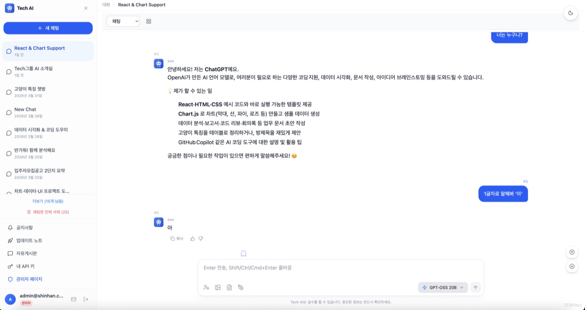
택가이Web 소개용으로 저장된 별도 JPG
사내게시판-택가이코드-땡겨요/_assets/tweb.jpg
게시판 패키지의 택가이웹 화면 캡처
사내게시판-택가이코드-땡겨요/03_택가이웹_발표자료/택가이웹_화면캡처.png
agent-builder-talk 14페이지에 들어간 동일 계열 캡처
_career_doc/agent-builder-talk/assets/tweb1-a8c1d8d4.png
사내발표 폴더의 주변 캡처 — 5페이지 보조 이미지 후보
my-projects/사내발표/d1.png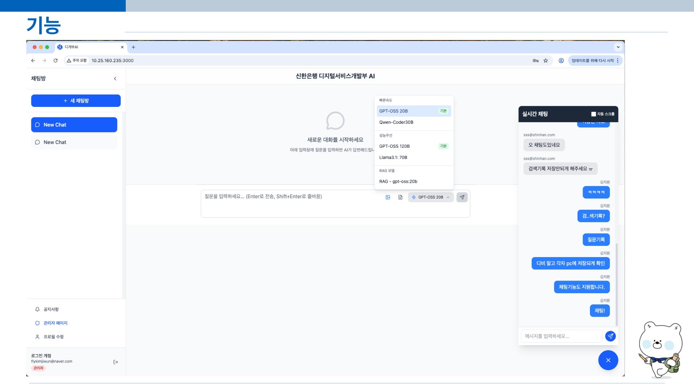
사내발표 폴더의 주변 캡처 — 5페이지 보조 이미지 후보
my-projects/사내발표/d2.png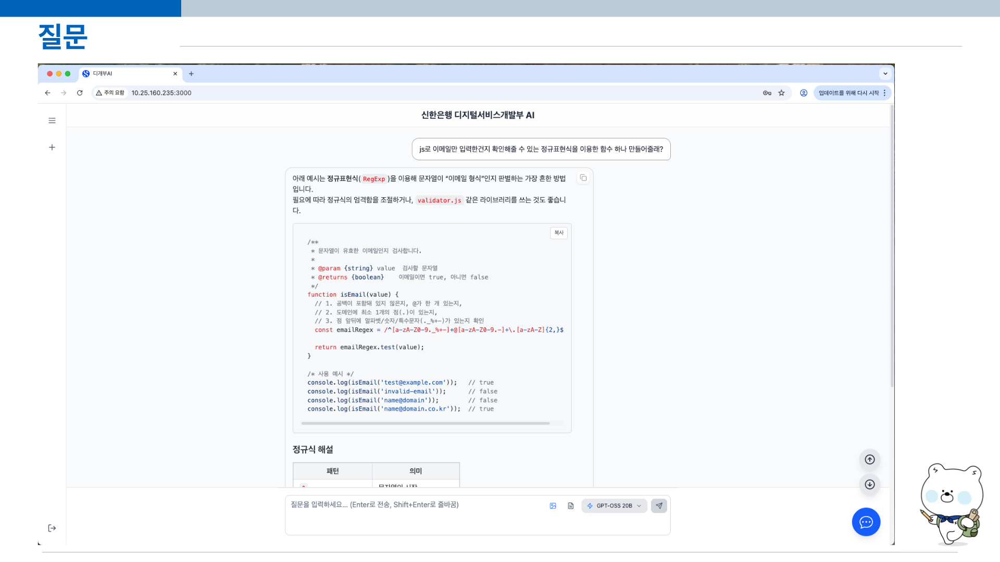
사내발표 폴더의 주변 캡처 — 5페이지 보조 이미지 후보
my-projects/사내발표/d3.png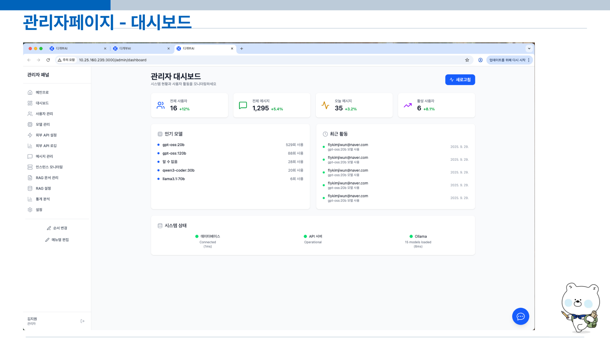
사내발표 폴더의 주변 캡처 — 5페이지 보조 이미지 후보
my-projects/사내발표/d4.png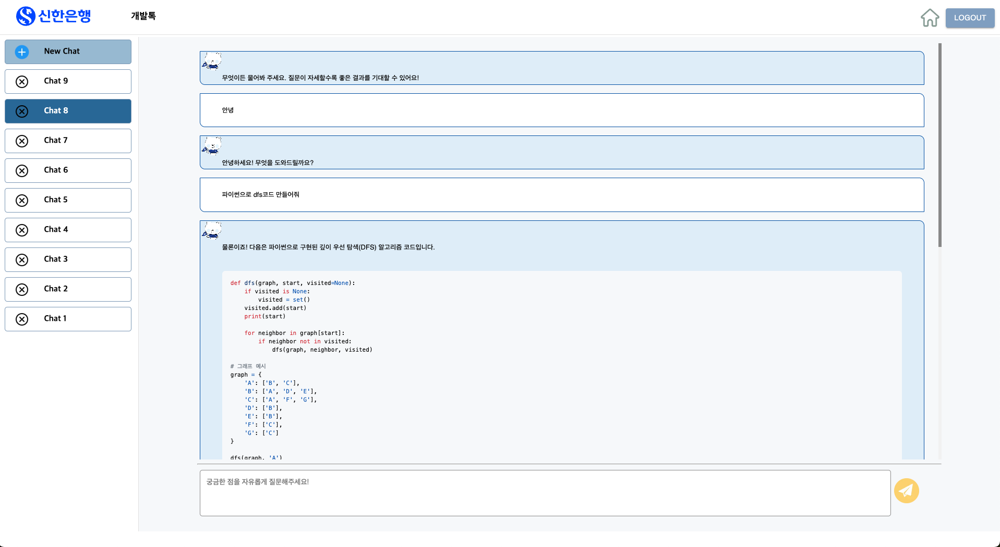
사내발표 폴더의 주변 캡처 — 5페이지 보조 이미지 후보
my-projects/사내발표/dp.png
사내발표 폴더의 주변 캡처 — 5페이지 보조 이미지 후보
my-projects/사내발표/aicr1.png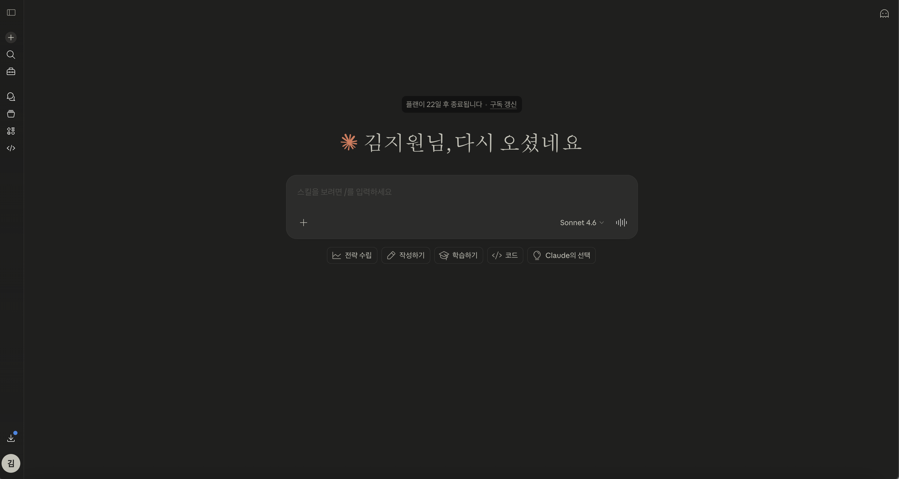
사내발표 폴더의 주변 캡처 — 5페이지 보조 이미지 후보
my-projects/사내발표/claude-web.png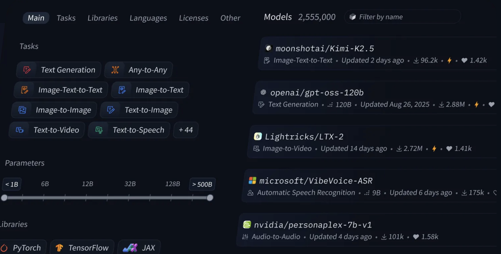
사내발표 폴더의 주변 캡처 — 5페이지 보조 이미지 후보
my-projects/사내발표/llm-model.png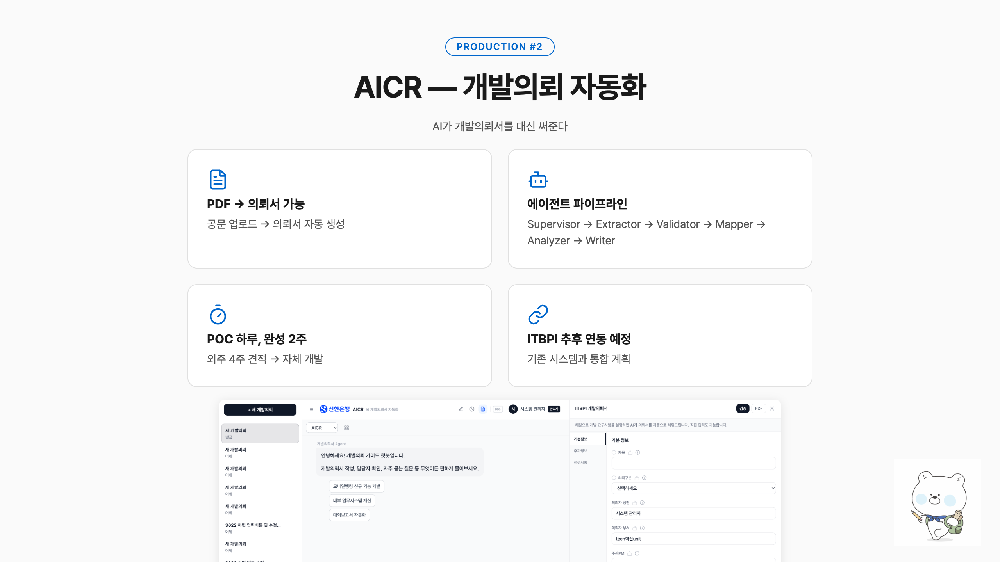
사내발표 렌더링/검수 캡처 — 페이지 전체 구도 참고용
my-projects/사내발표/test-fix-13.png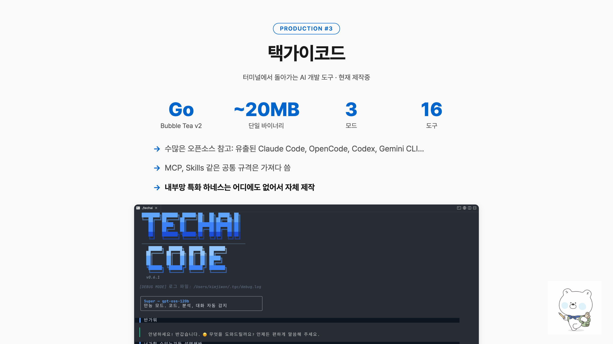
사내발표 렌더링/검수 캡처 — 페이지 전체 구도 참고용
my-projects/사내발표/test-fix-14.png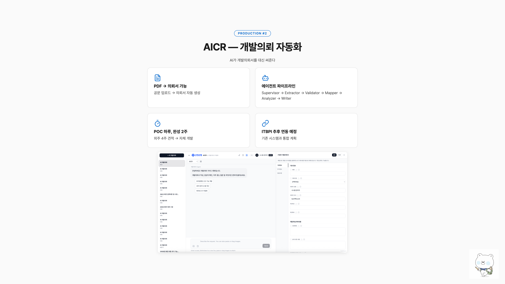
사내발표 렌더링/검수 캡처 — 페이지 전체 구도 참고용
my-projects/사내발표/test-1080-13.png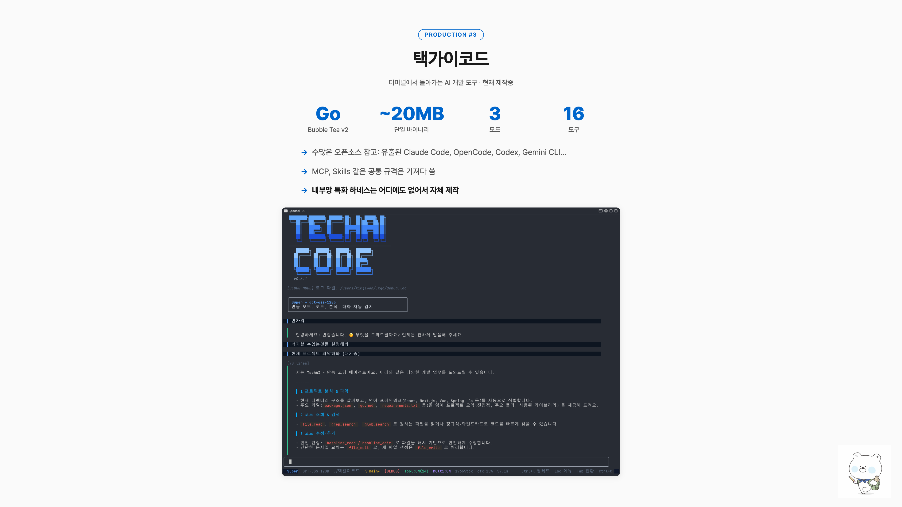
사내발표 렌더링/검수 캡처 — 페이지 전체 구도 참고용
my-projects/사내발표/test-1080-14.png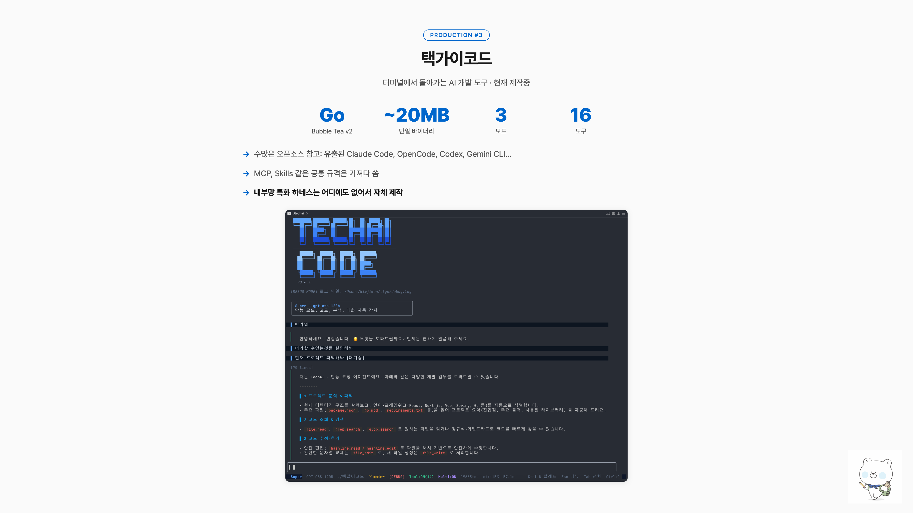
사내발표 렌더링/검수 캡처 — 페이지 전체 구도 참고용
my-projects/사내발표/test-big-14.png